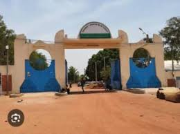

Description et Historique

Historique
La Semaine Nationale de la Culture a été créée en 1983 pour promouvoir et préserver le patrimoine culturel burkinabè. Depuis sa création, elle se tient principalement à Bobo-Dioulasso et constitue un cadre de rencontre et d'expression pour les artistes de tout le pays.
Description
La Semaine Nationale de la Culture est le plus grand événement culturel du Burkina Faso, organisé à Bobo-Dioulasso. Elle rassemble des artistes, artisans et participants venus de toutes les régions pour valoriser les cultures du pays. Pendant cette période, la ville est animée par des spectacles, des expositions, des concours artistiques et des activités traditionnelles.